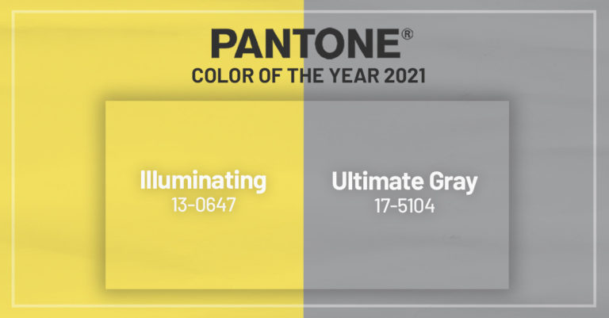
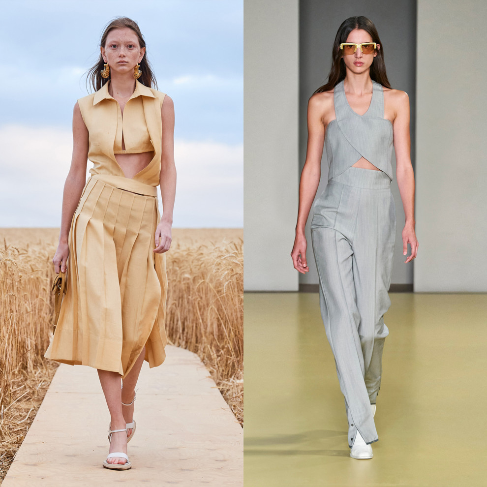

Институт цвета Pantone каждый сезон объявляет новые цвета, которые будут главенствующими среди коллекций брендов. Так, в декабре 2020 года модные эксперты выделили
самые модные цвета 2021 года, а сейчас команда Panton назвала самые актуальные оттенки на Неделе моды в Лондоне сезона осень-зима 2021/2022. По словам Леатрис Айзман, исполнительного директора Института цвета Pantone, «противоположности» станут движущими силами этого сезона — «наследие» и «современность», «природное начало» и «городской стиль», «практичность и креативный подход».
Как представители Института цвета Pantone выбирают главный цвет года?
"Мы хотим развеять все сомнения относительно процесса выбора главного цвета. Мы не смотрим в некий "хрустальный шар", чтобы определиться с выбором цвета", – поясняет Лори Прессман, вице-президент Института цвета Pantone. "Это процесс, требующий серьезного внимания и аналитики. Это кульминация всей работы, которую выполняет команда. В итоге прогноз информирует не только о главном цвете года, но и предлагает широкую палитру цветовых тенденций".
Как выглядит жизнь предсказателя тенденций?
"Большая часть того, что мы делаем, связано с психологией цвета и тем, как он влияет на самочувствие людей в целом", – говорит Леатрис Эйсман, исполнительный директор Института цвета Pantone. "Обычно наша команда путешествует по всему миру, делясь друг с другом идеями – образами, модными выражениями – всем, что мы находим важным".
Галерея

